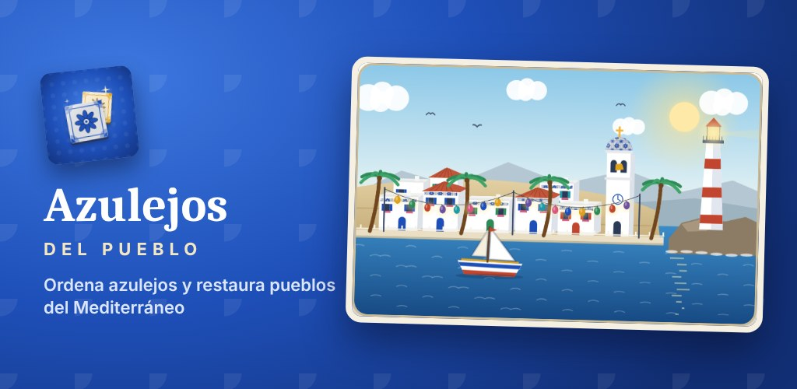
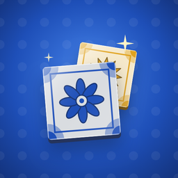

Azulejos del Pueblo
Ordena azulejos pintados a mano hasta que cada estante tenga un solo dibujo y usa las monedas para restaurar pueblos del Mediterráneo: España, Italia, Grecia y Turquía. Disponible en 12 idiomas.
Próximamente en Google Play